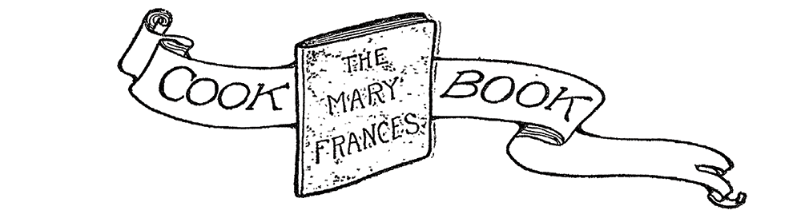

Omelet
BREAKFAST
- 1 cup flour
- 1/4 teaspoon salt
- 1/3 cup lard
- 1/3 cup cold water
- (use as little water as possible)
- preserved cherries
- Sift salt and flour into a bowl.
- Rub lard into flour with finger tips until like coarse powder.
- Add half the cold water, stirring with a knife to form a stiff ball. Keep this on one side of the bowl.
- Stir in more water until the remaining flour forms a ball. Press these balls together.
- Roll out. Fit to pie plate. Trim off overhanging edges.
- Bake in a hot oven.
- Spread cooked heart-shaped pastry shells with preserved cherries.